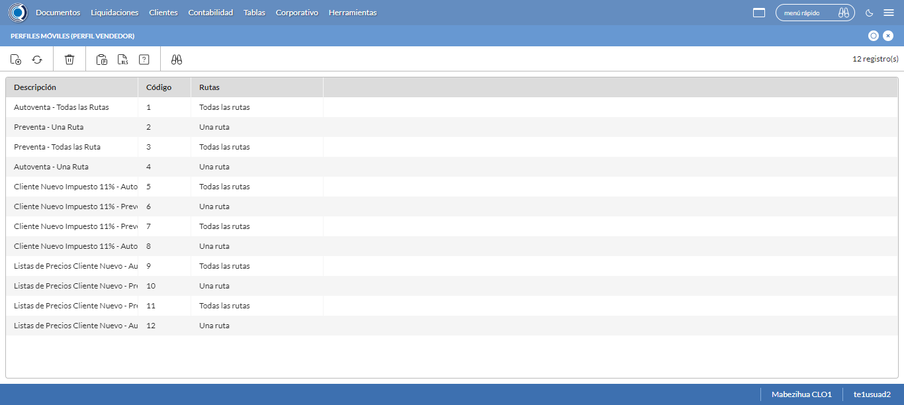
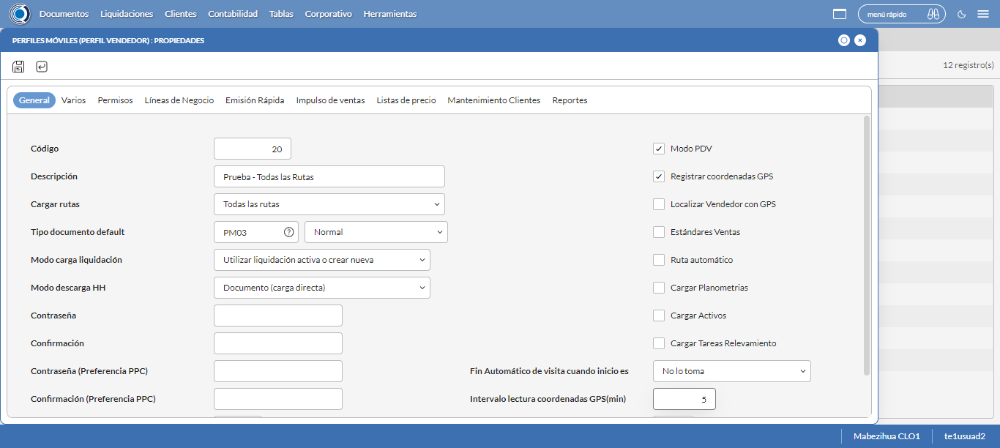
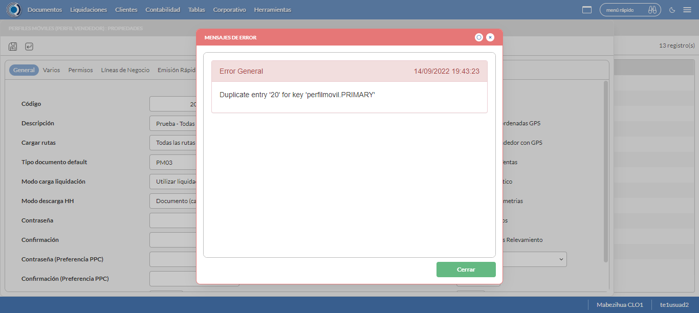
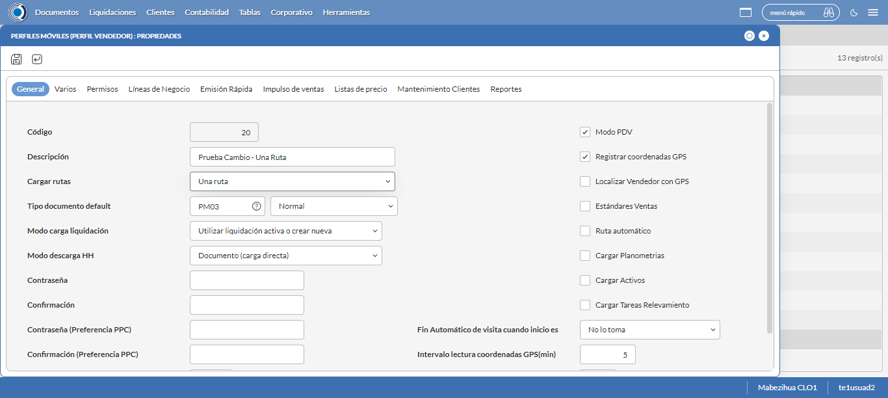
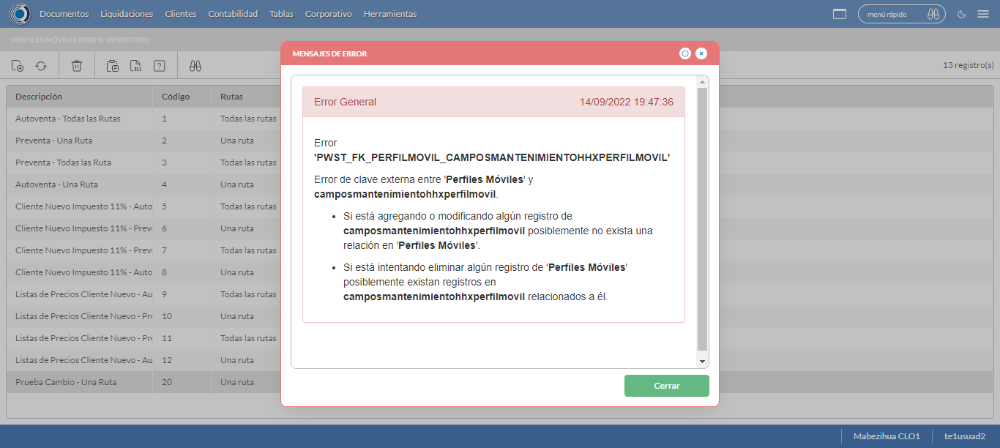

Desarrollado por : Area de Testing PWST
Fecha y hora de inicio : 2022-09-14 14:34:39
Duracion : 0:13:07.575329
Resultado : Total 8，Correctos 6 ，Errores 2 ，Taza de resultado 75.00%
Resumen 75.00% Errores 2 Fallidos 0 Correctos 6 Test realizados 8
| Caso de Prueba | Total | Correctos | Fallido | Error | Detalles | Captura del error |
| PerfilesMoviles.Test: Escenario 1 de Perfiles Moviles | 8 | 6 | 0 | 2 | Detalles | |
test |
pt1_1: 2022-09-14 14:34:41,615 - root - INFO - Se abre el chrome
2022-09-14 14:34:43,018 - root - INFO - Entra a la URL
2022-09-14 14:34:43,152 - root - INFO - Maximiza la pantalla
2022-09-14 14:34:46,202 - root - INFO - Cambia al frame
|
|
||||
test_000: Ingresa a la base de datos |
pt1_2: 2022-09-14 14:34:49,358 - root - INFO - Escribe el usuario
2022-09-14 14:34:49,467 - root - INFO - Escribe la contraseña
2022-09-14 14:34:49,611 - root - INFO - Se dio clic en el boton ingresar
2022-09-14 14:34:50,428 - root - INFO - Ejecutar Enterprise
2022-09-14 14:34:54,518 - root - INFO - Cambia entre pestañas
|
|
||||
test_001: Abre menu y ejecuta pantalla |
pt1_3: 2022-09-14 14:35:11,529 - root - INFO - Abre la pantalla de Perfiles Moviles
2022-09-14 14:35:11,626 - root - INFO - La pantalla ejecutada es Perfiles Moviles
2022-09-14 14:35:14,634 - root - INFO - Captura: C:\xampp\htdocs\versiones\automatizaciones\AutoPWST\01PM\report\img screen：20220914_14_35_14.png
2022-09-14 14:35:14,851 - root - INFO - Se presiona el boton 'Nuevo', para crear un nuevo registro.
|
 | ||||
test_002: Abre la ventana de nuevo y crear un registro |
pt1_4: 2022-09-14 14:35:19,935 - root - INFO - Se abrio la pantalla para el ingreso de un registro nuevo.
2022-09-14 14:35:19,973 - root - INFO - El campo 'Código' si se encuentra visible.
2022-09-14 14:35:20,014 - root - INFO - El campo 'Descripción' si se encuentra visible.
2022-09-14 14:35:20,052 - root - INFO - El campo 'Cargar rutas' si se encuentra visible.
2022-09-14 14:35:20,093 - root - INFO - El campo 'Tipo documento default' si se encuentra visible.
2022-09-14 14:35:20,134 - root - INFO - El campo 'Modo carga liquidación' si se encuentra visible.
2022-09-14 14:35:20,173 - root - INFO - El campo 'Modo descarga HH' si se encuentra visible.
2022-09-14 14:35:20,212 - root - INFO - El campo 'Modo PDV' si se encuentra visible.
2022-09-14 14:35:20,261 - root - INFO - El campo 'Registrar coordenadas GPS' si se encuentra visible.
2022-09-14 14:35:20,300 - root - INFO - El campo 'Fin Automático de visita cuando inicio es' si se encuentra visible.
2022-09-14 14:35:20,337 - root - INFO - El campo 'Intervalo lectura coordenadas GPS(min)' si se encuentra visible.
2022-09-14 14:35:20,396 - root - INFO - Ingresa el codigo del nuevo registro
2022-09-14 14:35:23,540 - root - INFO - Ingresa la Descripcion del nuevo registro
2022-09-14 14:35:34,995 - root - INFO - Se selecciono la opción Todas las Rutas
2022-09-14 14:35:38,119 - root - INFO - Ingresa el Tipo documento default del nuevo registro
2022-09-14 14:35:53,043 - root - INFO - Se selecciono la opción Normal
2022-09-14 14:36:04,517 - root - INFO - Se selecciono el registro de Modo carga liquidación
2022-09-14 14:36:15,966 - root - INFO - Se selecciono la opción Documento (carga directa)
2022-09-14 14:36:19,083 - root - INFO - Se dió click en el checkbox Modo PDV
2022-09-14 14:36:22,190 - root - INFO - Se dió click en el checkbox Registrar coordenadas GPS
2022-09-14 14:36:33,662 - root - INFO - Se dió click en la opción No lo toma
2022-09-14 14:36:36,782 - root - INFO - Ingresa el Intervalo lectura coordenadas GPS(min) del nuevo registro
2022-09-14 14:36:39,786 - root - INFO - Captura: C:\xampp\htdocs\versiones\automatizaciones\AutoPWST\01PM\report\img screen：20220914_14_36_39.png
2022-09-14 14:36:43,119 - root - INFO - Se hace el cambio de pestaña Varios para continuar con el registro nuevo
2022-09-14 14:36:48,165 - root - INFO - El campo 'Cargar resumen de cuentas únicamente del vendedor de la ruta' si se encuentra visible.
2022-09-14 14:36:48,218 - root - INFO - El campo 'Verificar límite de crédito' si se encuentra visible.
2022-09-14 14:36:48,258 - root - INFO - El campo 'Verificar opción guardar como' del tipo de documento' si se encuentra visible.
2022-09-14 14:36:48,297 - root - INFO - El campo 'Permitir pagos a cuenta en cancelaciones' si se encuentra visible.
2022-09-14 14:36:48,343 - root - INFO - El campo 'Disco de datos (WorkAbout)' si se encuentra visible.
2022-09-14 14:36:48,389 - root - INFO - El campo 'Tipo de Vendedor' si se encuentra visible.
2022-09-14 14:36:48,430 - root - INFO - El campo 'Enviar documentos de inmediato al servidor.' si se encuentra visible.
2022-09-14 14:36:48,505 - root - INFO - Se dió click en el checkbox Cargar resumen de cuentas únicamente del vendedor de la ruta
2022-09-14 14:36:51,600 - root - INFO - Se dió click en el checkbox Verificar límite de crédito
2022-09-14 14:36:54,704 - root - INFO - Se dió click en el checkbox Verificar opción 'guardar como' del tipo de documento
2022-09-14 14:36:57,818 - root - INFO - Se dió click en el checkbox Permitir Pagos
2022-09-14 14:37:07,966 - root - INFO - Se dió click en el botón espacio para mover la pantalla hacía abajo
2022-09-14 14:37:19,414 - root - INFO - Se selecciono el registro de Disco de Datos
2022-09-14 14:37:30,865 - root - INFO - Se dió click en la opción Autoventa
2022-09-14 14:37:33,995 - root - INFO - Se dió click en el checkbox Enviar documentos de inmediato al servidor.
2022-09-14 14:37:37,109 - root - INFO - Se hace el cambio a la pestaña Permisos para continuar con el registro nuevo
2022-09-14 14:37:42,218 - root - INFO - Se presiona el boton 'Nuevo de la pestaña Permiso' , para crear un nuevo registro.
2022-09-14 14:37:47,301 - root - INFO - El campo 'Permisos' si se encuentra visible.
2022-09-14 14:37:55,713 - root - INFO - Se dió click en la opción Inihibir Georeferenciación
2022-09-14 14:37:58,815 - root - INFO - Se presiona el boton 'Guardar de la pestaña Permiso', para guardar el registro.
2022-09-14 14:38:03,920 - root - INFO - Se hace el cambio a la pestaña Lineas de Negocio para continuar con el registro nuevo
2022-09-14 14:38:09,017 - root - INFO - Se presiona el boton 'Nuevo de la pestaña Permiso' , para crear un nuevo registro.
2022-09-14 14:38:14,062 - root - INFO - El campo 'Línea negocio' si se encuentra visible.
2022-09-14 14:38:22,515 - root - INFO - Se selecciono el registro de Linea de negocio
2022-09-14 14:38:25,653 - root - INFO - Se presiona el boton 'Guardar de la pestaña Linea de Negocio', para guardar el registro.
2022-09-14 14:38:30,753 - root - INFO - Se presiona el boton 'Nuevo de la pestaña Permiso' , para crear un nuevo registro.
2022-09-14 14:38:44,229 - root - INFO - Se selecciono el registro de Linea de negocio
2022-09-14 14:38:47,339 - root - INFO - Se presiona el boton 'Guardar de la pestaña Linea de Negocio', para guardar el registro.
2022-09-14 14:38:52,415 - root - INFO - Se presiona el boton 'Nuevo de la pestaña Permiso' , para crear un nuevo registro.
2022-09-14 14:39:05,833 - root - INFO - Se selecciono el registro de Linea de negocio
2022-09-14 14:39:08,952 - root - INFO - Se presiona el boton 'Guardar de la pestaña Linea de Negocio', para guardar el registro.
2022-09-14 14:39:14,032 - root - INFO - Se hace el cambio a la pestaña Impulso Ventas para continuar con el registro nuevo
2022-09-14 14:39:19,125 - root - INFO - Se presiona el boton 'Nuevo de la pestaña Impulso de Ventas' , para crear un nuevo registro.
2022-09-14 14:39:24,226 - root - INFO - El campo 'Artículo' si se encuentra visible.
2022-09-14 14:39:24,293 - root - INFO - Ingresa el Articulo del nuevo registro
2022-09-14 14:39:30,527 - root - INFO - Se presiona el boton 'Guardar de la pestaña Impulso de Ventas', para guardar el registro.
2022-09-14 14:39:35,638 - root - INFO - Se presiona el boton 'Nuevo de la pestaña Impulso de Ventas' , para crear un nuevo registro.
2022-09-14 14:39:40,756 - root - INFO - Ingresa el Articulo del nuevo registro
2022-09-14 14:39:46,953 - root - INFO - Se presiona el boton 'Guardar de la pestaña Impulso de Ventas', para guardar el registro.
2022-09-14 14:39:52,038 - root - INFO - Se presiona el boton 'Nuevo de la pestaña Impulso de Ventas' , para crear un nuevo registro.
2022-09-14 14:39:57,133 - root - INFO - Ingresa el Articulo del nuevo registro
2022-09-14 14:40:03,332 - root - INFO - Se presiona el boton 'Guardar de la pestaña Impulso de Ventas', para guardar el registro.
2022-09-14 14:40:08,442 - root - INFO - Se presiona el boton 'Nuevo de la pestaña Impulso de Ventas' , para crear un nuevo registro.
2022-09-14 14:40:13,561 - root - INFO - Ingresa el Articulo del nuevo registro
2022-09-14 14:40:19,756 - root - INFO - Se presiona el boton 'Guardar de la pestaña Impulso de Ventas', para guardar el registro.
2022-09-14 14:40:24,855 - root - INFO - Se presiona el boton 'Nuevo de la pestaña Impulso de Ventas' , para crear un nuevo registro.
2022-09-14 14:40:29,952 - root - INFO - Ingresa el Articulo del nuevo registro
2022-09-14 14:40:36,207 - root - INFO - Se presiona el boton 'Guardar de la pestaña Impulso de Ventas', para guardar el registro.
2022-09-14 14:40:41,309 - root - INFO - Se hace el cambio a la pestaña Mantenimiento Clientes para continuar con el registro nuevo
2022-09-14 14:40:46,399 - root - INFO - El campo 'Permiso agregar nuevos clientes' si se encuentra visible.
2022-09-14 14:40:46,438 - root - INFO - El campo 'Permiso modificar clientes existentes' si se encuentra visible.
2022-09-14 14:40:46,479 - root - INFO - El campo 'Ruta referencia' si se encuentra visible.
2022-09-14 14:40:46,560 - root - INFO - Se dió click en el checkbox Permiso agregar nuevos clientes
2022-09-14 14:40:49,676 - root - INFO - Se dió click en el checkbox Permiso modificar clientes existentes
2022-09-14 14:41:01,178 - root - INFO - Se selecciono el registro de Ruta Referencia
2022-09-14 14:41:04,332 - root - INFO - Se dió click en el checkbox Clasificación 1
2022-09-14 14:41:07,459 - root - INFO - Se dió click en el checkbox Clasificación 2
2022-09-14 14:41:10,585 - root - INFO - Se dió click en el checkbox Clasificación 3
2022-09-14 14:41:13,714 - root - INFO - Se dió click en el checkbox Colonia
2022-09-14 14:41:16,829 - root - INFO - Se dió click en el checkbox Codigo Postal
2022-09-14 14:41:19,939 - root - INFO - Se dió click en el checkbox Direccion
2022-09-14 14:41:23,081 - root - INFO - Se dió click en el checkbox Entorno PDV
2022-09-14 14:41:26,215 - root - INFO - Se dió click en el checkbox Esquina 1
2022-09-14 14:41:29,341 - root - INFO - Se dió click en el checkbox Esquina 2
2022-09-14 14:41:32,477 - root - INFO - Se dió click en el checkbox Paises
2022-09-14 14:41:35,614 - root - INFO - Se dió click en el checkbox Departamento
2022-09-14 14:41:38,742 - root - INFO - Se dió click en el checkbox Localidad
2022-09-14 14:41:41,890 - root - INFO - Se da clic en el boton Guardar; se debe crear un nuevo registro.
|
 | ||||
test_003: Repite el Registro |
pt1_5: 2022-09-14 14:41:47,010 - root - INFO - Se presiona el boton 'Refrescar', para crear un nuevo registro igual al anterior.
2022-09-14 14:41:52,115 - root - INFO - Se presiona el boton 'Nuevo', para crear un nuevo registro igual al anterior.
2022-09-14 14:42:00,183 - root - INFO - Se abrio la pantalla para el ingreso de un registro nuevo.
2022-09-14 14:42:00,242 - root - INFO - Ingresa el codigo del nuevo registro
2022-09-14 14:42:03,399 - root - INFO - Ingresa la Descripcion del nuevo registro
2022-09-14 14:42:14,882 - root - INFO - Se selecciono la opción Todas las Rutas
2022-09-14 14:42:18,014 - root - INFO - Ingresa el Tipo documento default del nuevo registro
2022-09-14 14:42:33,058 - root - INFO - Se selecciono la opción Normal
2022-09-14 14:42:44,516 - root - INFO - Se selecciono el registro de Modo carga liquidación
2022-09-14 14:42:55,977 - root - INFO - Se selecciono la opción Documento (carga directa)
2022-09-14 14:42:59,094 - root - INFO - Se dió click en el checkbox Modo PDV
2022-09-14 14:43:02,187 - root - INFO - Se dió click en el checkbox Registrar coordenadas GPS
2022-09-14 14:43:13,655 - root - INFO - Se dió click en la opción No lo toma
2022-09-14 14:43:16,797 - root - INFO - Ingresa el Intervalo lectura coordenadas GPS(min) del nuevo registro
2022-09-14 14:43:22,921 - root - INFO - Se da clic en el boton Guardar; NO se debe crear un nuevo registro.
2022-09-14 14:43:27,999 - root - INFO - Captura: C:\xampp\htdocs\versiones\automatizaciones\AutoPWST\01PM\report\img screen：20220914_14_43_27.png
2022-09-14 14:43:28,245 - root - INFO - Se presiona el boton 'Cerrar', para cerrar el mensaje de duplicidad de llave primaria
2022-09-14 14:43:33,346 - root - INFO - Se presiona el boton 'Cerrar', para cerrar la ventana
|
 | ||||
test_004: Modificar el registro |
pt1_6: 2022-09-14 14:43:42,477 - root - INFO - Se presiona el boton 'Refrescar', para proceder a modificar el registro.
2022-09-14 14:43:47,109 - root - INFO - Se da clic en el registro creado, para proceder a modificarlo.
2022-09-14 14:43:52,285 - root - INFO - Se modifica el contenido del campo Observaciones 1
2022-09-14 14:44:03,760 - root - INFO - Se selecciono la opción Una Ruta
2022-09-14 14:44:06,770 - root - INFO - Captura: C:\xampp\htdocs\versiones\automatizaciones\AutoPWST\01PM\report\img screen：20220914_14_44_06.png
2022-09-14 14:44:07,019 - root - INFO - Se hace el cambio de pestaña Permisos para continuar con la modificación del registro
2022-09-14 14:44:12,127 - root - INFO - Se presiona el boton 'Nuevo de la pestaña Permiso' , para crear un nuevo registro.
2022-09-14 14:44:25,577 - root - INFO - Se dió click en la opción Anular Documentos
2022-09-14 14:44:28,672 - root - INFO - Se presiona el boton 'Guardar de la pestaña Permiso', para guardar el registro.
2022-09-14 14:44:33,803 - root - INFO - Se hace el cambio a la pestaña Lineas de Negocio para continuar con la modificación del registro
2022-09-14 14:44:38,903 - root - INFO - Se hace el cambio de pestaña Impulso Ventas para continuar con la modificación del registro
2022-09-14 14:44:48,537 - root - INFO - Se da clic en el registro creado, para proceder a modificarlo.
2022-09-14 14:44:56,684 - root - INFO - Se presiona el boton 'Eliminar de Impulso Ventas', para eliminar el primer registro.
2022-09-14 14:45:01,293 - root - INFO - Se da clic en el registro creado, para proceder a modificarlo.
2022-09-14 14:45:09,416 - root - INFO - Se presiona el boton 'Eliminar de Impulso Ventas', para eliminar el segundo registro.
2022-09-14 14:45:14,016 - root - INFO - Se da clic en el registro creado, para proceder a modificarlo.
2022-09-14 14:45:22,134 - root - INFO - Se presiona el boton 'Eliminar de Impulso Ventas', para eliminar el tercer registro.
2022-09-14 14:45:26,751 - root - INFO - Se da clic en el registro creado, para proceder a modificarlo.
2022-09-14 14:45:34,866 - root - INFO - Se presiona el boton 'Eliminar de Impulso Ventas', para eliminar el cuarto registro.
2022-09-14 14:45:39,466 - root - INFO - Se da clic en el registro creado, para proceder a modificarlo.
2022-09-14 14:45:47,562 - root - INFO - Se presiona el boton 'Eliminar de Impulso Ventas', para eliminar el quinto registro.
2022-09-14 14:45:47,642 - root - INFO - Se da clic en el boton Guardar; se debe modificar la informacion del registro.
|
 | ||||
test_005: Eliminar el registro creado |
ft1_7: 2022-09-14 14:45:52,725 - root - INFO - Se presiona el boton 'Refrescar', para proceder a eliminar el registro.
2022-09-14 14:46:02,309 - root - INFO - Se da clic en el registro creado, para proceder a eliminarlo.
2022-09-14 14:46:05,399 - root - INFO - Se hace el cambio de pestaña Permisos para continuar con la eliminación del registro
2022-09-14 14:46:14,990 - root - INFO - Se da clic en el primer registro de Permisos, para proceder a eliminarlo.
2022-09-14 14:46:23,099 - root - INFO - Se presiona el boton 'Eliminar de Permiso', para eliminar el segundo registro.
2022-09-14 14:46:27,661 - root - INFO - Se da clic en el segundo registro de Permisos, para proceder a Eliminarlo.
2022-09-14 14:46:35,743 - root - INFO - Se presiona el boton 'Eliminar de Permiso', para eliminar el segundo registro.
2022-09-14 14:46:35,818 - root - INFO - Se hace el cambio a la pestaña Lineas de Negocio para continuar con la eliminación del registro
2022-09-14 14:46:45,388 - root - INFO - Se da clic en el primer registro de Linea de Negocio, para proceder a Eliminarlo.
2022-09-14 14:46:53,510 - root - INFO - Se presiona el boton 'Eliminar de Linea de Negocio', para eliminar el primer registro.
2022-09-14 14:46:58,073 - root - INFO - Se da clic en el segundo registro Linea de negocio, para proceder a Eliminarlo.
2022-09-14 14:47:06,153 - root - INFO - Se presiona el boton 'Eliminar de Linea de Negocio', para eliminar el segundo registro.
2022-09-14 14:47:10,712 - root - INFO - Se da clic en el tercer registro Lineas de Negocio, para proceder a Eliminarlo.
2022-09-14 14:47:18,782 - root - INFO - Se presiona el boton 'Eliminar de Linea de Negocio', para eliminar el tercer registro.
2022-09-14 14:47:18,859 - root - INFO - Se da clic en el boton Guardar; se debe modificar la informacion del registro.
2022-09-14 14:47:28,437 - root - INFO - Se da clic en el registro creado, para proceder a eliminarlo.
2022-09-14 14:47:36,579 - root - INFO - Se presiona el boton 'Eliminar', para eliminar el registro.
2022-09-14 14:47:36,580 - root - INFO - Captura: C:\xampp\htdocs\versiones\automatizaciones\AutoPWST\01PM\report\img screen：20220914_14_47_36.png
2022-09-14 14:47:36,852 - root - INFO - Se confirma el eliminado del registro
2022-09-14 14:47:42,933 - root - ERROR - No se dió click en el botón Refrescar, validar que la acción anterior haya finalizado, que el xpath sea el correcto o que la página no presente lentitud
2022-09-14 14:47:45,946 - root - INFO - Captura: C:\xampp\htdocs\versiones\automatizaciones\AutoPWST\01PM\report\img screen：20220914_14_47_45.png
Traceback (most recent call last):
File "C:\xampp\htdocs\versiones\automatizaciones\AutoPWST\01PM\testCase\PerfilesMoviles.py", line 56, in test_005
return eliminarregistro.eliminarregistro(self)
File "C:\xampp\htdocs\versiones\automatizaciones\AutoPWST\01PM\testCase\eliminarregistro.py", line 424, in eliminarregistro
Refresca4.click()
File "C:\Users\PWST\AppData\Local\Programs\Python\Python310\lib\site-packages\selenium\webdriver\remote\webelement.py", line 89, in click
self._execute(Command.CLICK_ELEMENT)
File "C:\Users\PWST\AppData\Local\Programs\Python\Python310\lib\site-packages\selenium\webdriver\remote\webelement.py", line 773, in _execute
return self._parent.execute(command, params)
File "C:\Users\PWST\AppData\Local\Programs\Python\Python310\lib\site-packages\selenium\webdriver\remote\webdriver.py", line 430, in execute
self.error_handler.check_response(response)
File "C:\Users\PWST\AppData\Local\Programs\Python\Python310\lib\site-packages\selenium\webdriver\remote\errorhandler.py", line 247, in check_response
raise exception_class(message, screen, stacktrace)
selenium.common.exceptions.ElementClickInterceptedException: Message: element click intercepted: Element <div tabindex="12" id="_D977D8E5A81A4454ACC1A27F503637AF__refresh_element" name="_D977D8E5A81A4454ACC1A27F503637AF__refresh_element">...</div> is not clickable at point (56, 88). Other element would receive the click: <div class="ui-modal-container">...</div>
(Session info: chrome=105.0.5195.102)
Stacktrace:
Backtrace:
Ordinal0 [0x00CBDF13+2219795]
Ordinal0 [0x00C52841+1779777]
Ordinal0 [0x00B6423D+803389]
Ordinal0 [0x00B999D4+1022420]
Ordinal0 [0x00B978C4+1013956]
Ordinal0 [0x00B954AB+1004715]
Ordinal0 [0x00B94117+999703]
Ordinal0 [0x00B89B76+957302]
Ordinal0 [0x00BAE7FC+1107964]
Ordinal0 [0x00B894B4+955572]
Ordinal0 [0x00BAEA14+1108500]
Ordinal0 [0x00BBF192+1175954]
Ordinal0 [0x00BAE616+1107478]
Ordinal0 [0x00B87F89+950153]
Ordinal0 [0x00B88F56+954198]
GetHandleVerifier [0x00FB2CB2+3040210]
GetHandleVerifier [0x00FA2BB4+2974420]
GetHandleVerifier [0x00D56A0A+565546]
GetHandleVerifier [0x00D55680+560544]
Ordinal0 [0x00C59A5C+1808988]
Ordinal0 [0x00C5E3A8+1827752]
Ordinal0 [0x00C5E495+1827989]
Ordinal0 [0x00C680A4+1867940]
BaseThreadInitThunk [0x7663FA29+25]
RtlGetAppContainerNamedObjectPath [0x77407A9E+286]
RtlGetAppContainerNamedObjectPath [0x77407A6E+238]
|
 | ||||
test_006: Cerrar_Navegador |
ft1_8: Traceback (most recent call last):
File "C:\xampp\htdocs\versiones\automatizaciones\AutoPWST\01PM\testCase\PerfilesMoviles.py", line 60, in test_006
self.driver.close()
File "C:\Users\PWST\AppData\Local\Programs\Python\Python310\lib\site-packages\selenium\webdriver\remote\webdriver.py", line 943, in close
self.execute(Command.CLOSE)
File "C:\Users\PWST\AppData\Local\Programs\Python\Python310\lib\site-packages\selenium\webdriver\remote\webdriver.py", line 430, in execute
self.error_handler.check_response(response)
File "C:\Users\PWST\AppData\Local\Programs\Python\Python310\lib\site-packages\selenium\webdriver\remote\errorhandler.py", line 247, in check_response
raise exception_class(message, screen, stacktrace)
selenium.common.exceptions.InvalidSessionIdException: Message: invalid session id
Stacktrace:
Backtrace:
Ordinal0 [0x00CBDF13+2219795]
Ordinal0 [0x00C52841+1779777]
Ordinal0 [0x00B64100+803072]
Ordinal0 [0x00B87C6D+949357]
Ordinal0 [0x00B88F56+954198]
GetHandleVerifier [0x00FB2CB2+3040210]
GetHandleVerifier [0x00FA2BB4+2974420]
GetHandleVerifier [0x00D56A0A+565546]
GetHandleVerifier [0x00D55680+560544]
Ordinal0 [0x00C59A5C+1808988]
Ordinal0 [0x00C5E3A8+1827752]
Ordinal0 [0x00C5E495+1827989]
Ordinal0 [0x00C680A4+1867940]
BaseThreadInitThunk [0x7663FA29+25]
RtlGetAppContainerNamedObjectPath [0x77407A9E+286]
RtlGetAppContainerNamedObjectPath [0x77407A6E+238]
|
|
||||
| Caso de prueba | 8 | 6 | 0 | 2 | Taza de resultado：75.00% | |